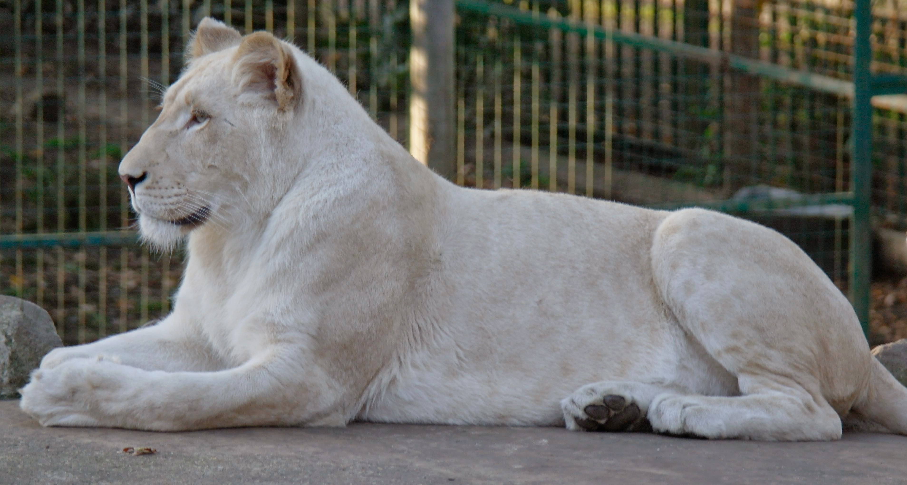
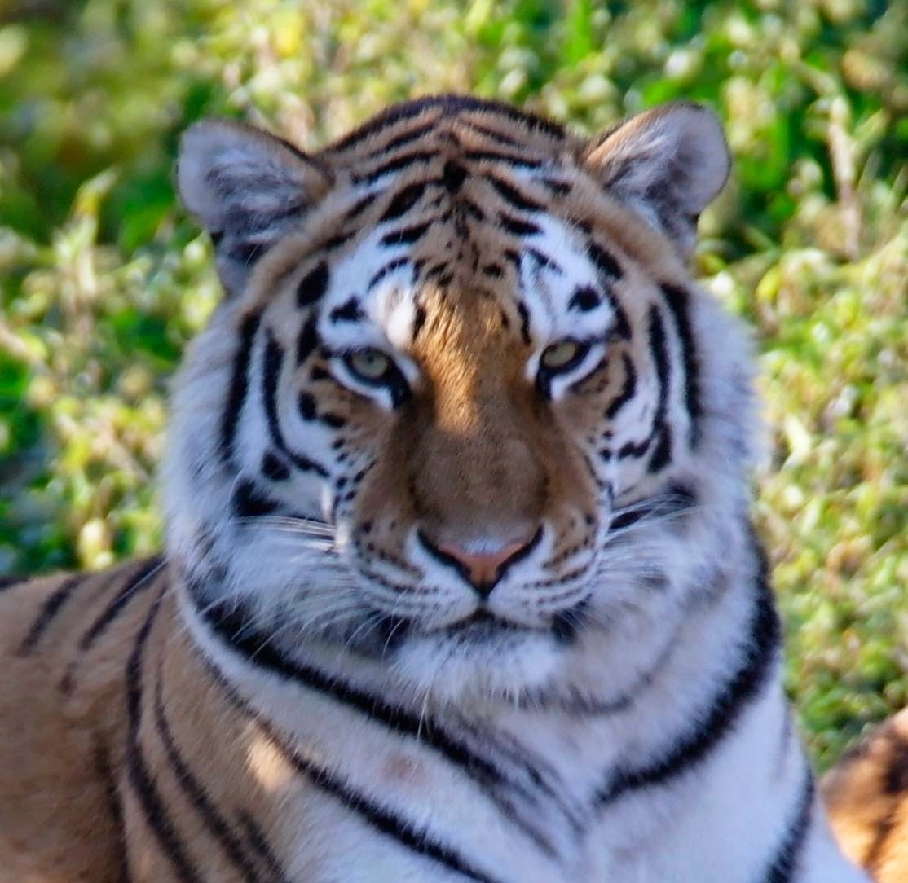

Posted to: The Google+ Heraldry Community
Posted by: Karl Wilcox
Created on: November 9 2014 at 12:38
Heraldry in the wild...
I spotted a couple of bits of heraldry in a wildlife park recently:
The head of a bengal tiger affronte proper
A lion sejant argent armed proper
Have fun everybody! :-)

